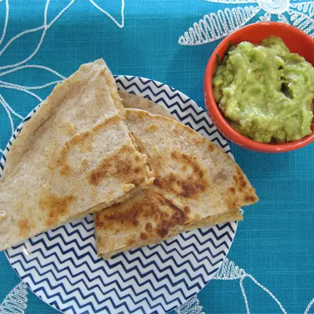

Black Bean Quesadillas

Description
These vegan black bean quesadillas pack a big punch, minus the fat of all that cheese.
Ingredients
- 1 (15 ounce) can great Northern beans, drained and rinsed
- 1 cup diced tomatoes, divided
- 1 clove garlic
- ⅓ cup nutritional yeast
- 1 teaspoon ground cumin
- ¼ teaspoon chili powder
- salt to taste
- 1 pinch cayenne pepper, or to taste
- ½ cup black beans, drained and rinsed
- 1 tablespoon olive oil, or as needed
- 8 whole grain tortillas
- cooking spray
Steps
- Blend great Northern beans, 3/4 cup tomatoes, and garlic in a food processor until smooth.
Add nutritional yeast, cumin, chili powder, salt, and cayenne pepper and blend until combined.
- Transfer bean mixture to a large bowl. Stir in black beans and remaining 1/4 cup tomatoes.
- Heat olive oil in a large skillet over medium-high heat. Place a tortilla in hot oil.
Spread about 1/4 cup filling over tortilla. Place another tortilla on top of filling;
cook until filling is warmed, about 10 minutes.
- Spray the top tortilla with cooking spray and flip quesadilla to cook the second side until lightly browned,
3 to 5 minutes. Repeat with remaining tortillas and filling.